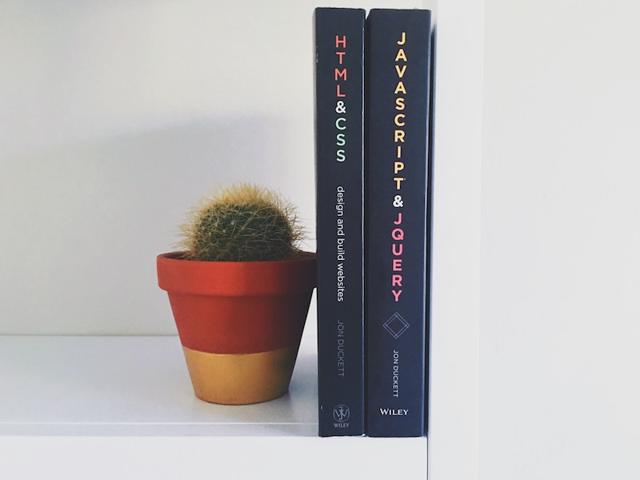

Profile
Committed, hard-working, and reliable. I am considered confident and possess excellent communication and interpersonal skills. I enjoy working with a team to create positive collaborative experiences while learning new techniques and approaches from others. In my free time I enjoy traveling, spending time with friends and family, exercising, and, of course, learning new technology.
Latest Project
Develop a real-time bidirectional polling chart and chat app. Utilize News API and CryptoCompare API to scrape for cryptocurrency articles and market pricing. Also using TinyURL API and D3 Visualization API for URL shortening and dynamic data visualization. Take a poll, scrape the data, gather information, and discuss the results all in one application.
Technology and Experience
Web Products Developer: HTML and CSS JavaScript jQuery
Designing web products is what I enjoy. Whether it be a personal website or something more complicated, being able to see a finished product that helps someone never gets old. The Internet helps people connect and I am happy to play a role in this.
MERN Stack: Mongo DB Express JS React JS Node.js
The nuts and bolts of technology! Databases and servers, server-side and client-side, the Internet and the Internet of things (IoT). How does this all connect? Most consider this intimidating, I consider this interesting.
IT Solutions Architect: ITIL Client Support IT Infrastructure IT Processes
Over 20 years of experience in Information Technology Support and Management. I have worked in Health Care, Manufacturing, Fortune 500, State Government, and Military. I am currently transitioning into AWS solutions and development and.